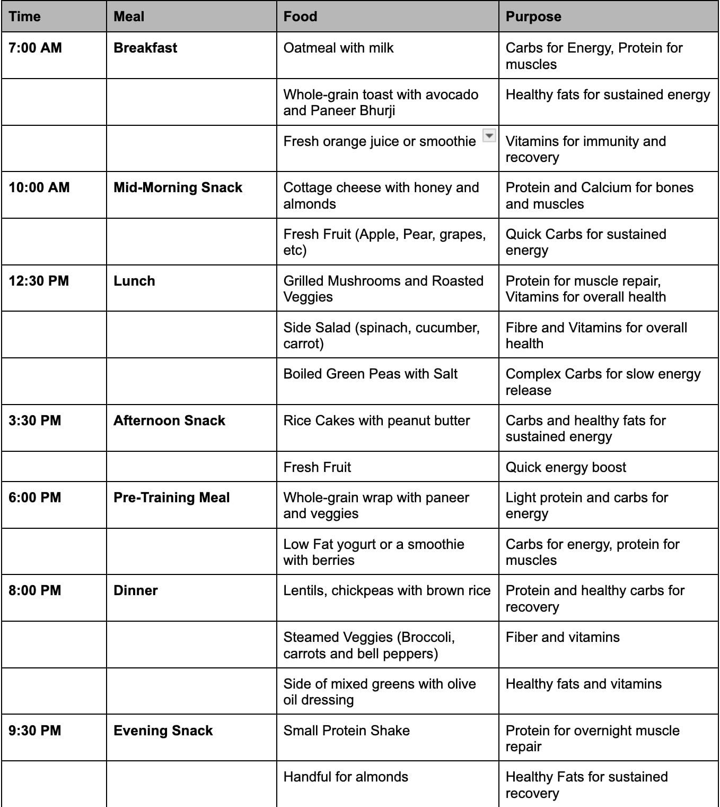

Athlete nutrition is the science of fueling an athlete's body to optimize performance, recovery, and overall health. It involves tailoring dietary intake to support the unique physical demands of different sports, training intensities, and individual body needs. Key aspects of athlete nutrition include:
1. Macronutrients
Carbohydrates provide quick energy, especially for high-intensity workouts. Athletes often need higher carbohydrate intake to fuel their muscles.
Proteins are essential for muscle repair and growth. High-protein foods support recovery after exercise, helping repair tissues stressed during training.
Fats offer a slower, more sustained energy source, particularly important for endurance sports and prolonged activities
2. Micronutrients
Vitamins and Minerals
Vital for energy production, bone health, immune function, and recovery.
Nutrition Tips
Performance Optimization: Athletes have unique dietary needs. Include complex carbs like quinoa or oats to fuel prolonged activity. Use natural performance enhancers like beetroot juice to improve stamina.
Injury Prevention: A nutrient-rich diet supports the immune system. Add omega-3 fatty acids from sources like flaxseeds and walnuts for anti-inflammatory benefits. Ensure adequate vitamin D and calcium intake for bone health.
Long-term Health: Athletes need to maintain their health and well-being. Incorporate antioxidant-rich foods such as berries, turmeric, and green tea to combat oxidative stress. Rotate protein sources like legumes, dairy, and tofu to diversify nutrient intake.
Adaptation to Training: Nutrition plays a key role in how the body adapts to training. Consume protein evenly across meals for better muscle protein synthesis. Time post-training nutrition to include carbs and protein in a 3:1 ratio for optimal recovery.
BMI Calculator
Sample Meal Plans
Below are examples of vegetarian, Jain, and non-vegetarian meal plans tailored for athletes.
Jain Meal Plan Details:
This Jain meal plan is specially designed for footballers following Jain dietary restrictions, focusing on plant-based foods that exclude root vegetables and incorporate fresh, seasonal ingredients. It ensures a balanced intake of carbohydrates, proteins, and healthy fats, providing optimal energy, muscle recovery, and overall health, while respecting the religious principles of non-violence and simplicity in food preparation.
Jain Meal Plan 2 Details:
This Jain meal plan is specially designed for footballers following Jain dietary restrictions, focusing on plant-based foods that exclude root vegetables and incorporate fresh, seasonal ingredients. It ensures a balanced intake of carbohydrates, proteins, and healthy fats, providing optimal energy, muscle recovery, and overall health, while respecting the religious principles of non-violence and simplicity in food preparation.

Vegetarian Meal Plan Details:
This vegetarian meal plan is designed for footballers who follow a plant-based diet, ensuring they get the right balance of carbohydrates, proteins, and fats for energy, muscle repair, and overall well-being. It includes whole grains, legumes, vegetables, and plant-based proteins, meeting the nutritional needs of athletes while respecting dietary preferences or religious restrictions.
Veg Meal Plan 2 Details:
This vegetarian meal plan is designed for footballers who follow a plant-based diet, ensuring they get the right balance of carbohydrates, proteins, and fats for energy, muscle repair, and overall well-being. It includes whole grains, legumes, vegetables, and plant-based proteins, meeting the nutritional needs of athletes while respecting dietary preferences or religious restrictions.
Non-Vegetarian Meal Plan Details:
This non-vegetarian meal plan is tailored for footballers who consume animal products, providing lean proteins, healthy fats, and carbohydrates essential for performance and recovery. It incorporates high-quality proteins from lean meats, fish, and eggs, alongside complex carbs and micronutrients to fuel training and enhance muscle repair.
Non Veg Meal Plan 2 Details:
This non-vegetarian meal plan is tailored for footballers who consume animal products, providing lean proteins, healthy fats, and carbohydrates essential for performance and recovery. It incorporates high-quality proteins from lean meats, fish, and eggs, alongside complex carbs and micronutrients to fuel training and enhance muscle repair.
The Role of Nutrition in Athletic Performance
All people should care about nutrition, but sports participation places unique demands on the body. This means that nutrition can help (or hinder) athletes in different ways:
Nutrition provides the body with energy. Athletes burn through their energy stores faster than an average person, especially during a competition, so their energy demands are higher. Burning more calories than you consume can not only affect sports performance, but can also lead to health issues such as fatigue and increased risk of stress fractures. When an athlete does not get enough energy from food relative to the amount of energy they are burning, it is called relative energy deficiency in sports (REDs). The key sources of energy in the foods we eat are carbohydrates, fats and proteins, and it’s crucial for athletes to consume these in a balanced way.
Nutrition helps the Body heal. Exercise is meant to cause micro-damage to the muscles by challenging them to handle more weight or resistance, and competition is often more intense than a regular workout. The good news is that muscles rebuild themselves bigger and stronger. It is also important to note that protein is rarely used as an energy source; rather, protein plays a major role in helping the muscles and other tissues recover. However, too much protein can increase the risk of dehydration and calcium loss.
Fluids regulate hydration and body temperature. Fluids are part of nutrition, too! Getting enough water is especially important for athletes, who tend to lose fluids faster than an average person due to increased sweating, especially when padding and extra sport gear are worn in sports like football and lacrosse. Plus, many competitions are outdoors, and hydration is crucial when competing on a hot day.
Nutrition affects body weight. Weight is important in certain sports such as wrestling, where it determines in which group an athlete competes. Many athletes feel pressure to meet specific weight goals. Working with a dietitian can help make sure your health and performance don’t suffer in your efforts to control weight.
Nutrition is important for overall health. When the body has all the nutrients it needs, it means you can function at your best both mentally and physically. Nutrition also helps support your immune system, helping you have fewer sick days.
Nutrition Boosting Game Performance
As humans, our relationship to food is complex. Food can be nourishing, enjoyable, social, and soothing. For this reason, there is a bidirectional relationship between diet and mental health. This means that mood can influence eating habits, and in turn, eating can impact mood and psychological well-being.
When you’re not getting proper nutrition, you might feel very stressed in an otherwise mildly stressful situation. As a result, you may turn to less healthy foods for comfort or as a time saver to mediate the feelings.
Because this food is less healthy, it further reduces your ability to adapt to stress. This can create a vicious cycle of eating foods that can worsen anxious feelings.
A similar cycle can happen with depression. You may feel depressed and low energy, so you turn to soothing foods or those that don’t require any work. These are often high in sugar and low in nutrition. You may feel worse after eating the foods, perpetuating the circle of worsening diet and mental health.
A 2019 study found that when people who have mental health challenges increase their fruit and vegetable intake, it reduces their symptoms
Another study in 2022 looked at the effects of the Mediterranean diet on those with severe depression. In this 12-month randomized, controlled trial, the intervention group (those on the diet) saw a large 20.6-point reduction in depression symptoms on the Beck Depression scale. A 6.2-point reduction was observed in the control group (not on the diet).
The Mediterranean diet is built around a variety of whole foods rich in fiber, vegetables, fruits, legumes, healthy fats, and fish. It includes very minimal, if any, ultra-processed food.
While this diet has gained popularity, many diets around the world apply similar principles of eating a diet filled with a variety of whole foods and very few ultra-processed foods.

.jpg)
.png)
.png)
 2.jpg)
.png)